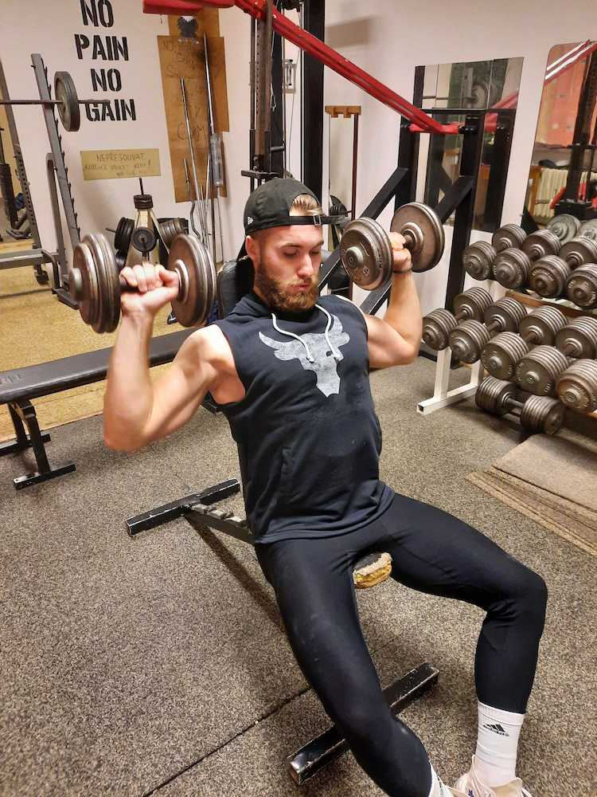
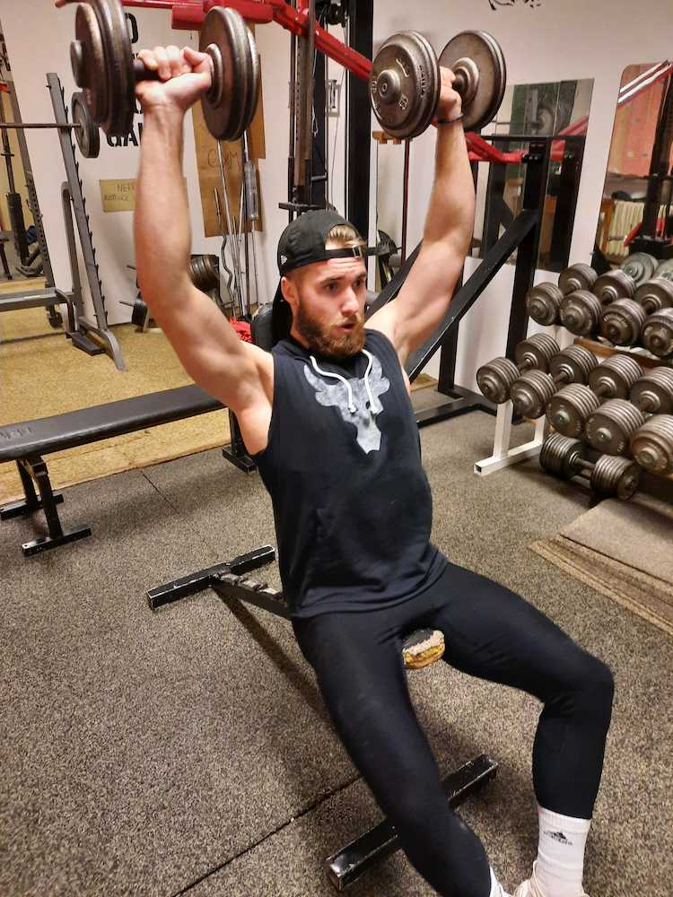

Tlaky
Při správném provedení cviku zatížíme všechny tři hlavy deltového svalu (ramen) i triceps a horní oblast prsou.
Menší náklon přenáší více zapojení přední část deltových svalů a zapojují se také horní vlákna prsních svalů.
Výchozí polohy zvedejte činky nad hlavu až do téměř propnutých paží a poté klesejte zpět do výchozí polohy.
Častou chybou je použití nadměrné zátěže na úkor rozsahu pohybu, kdy je dráha cviku výrazně zkrácena. Efektivnější je ovšem použití menší zátěže a úplného rozsahu pohybu.

